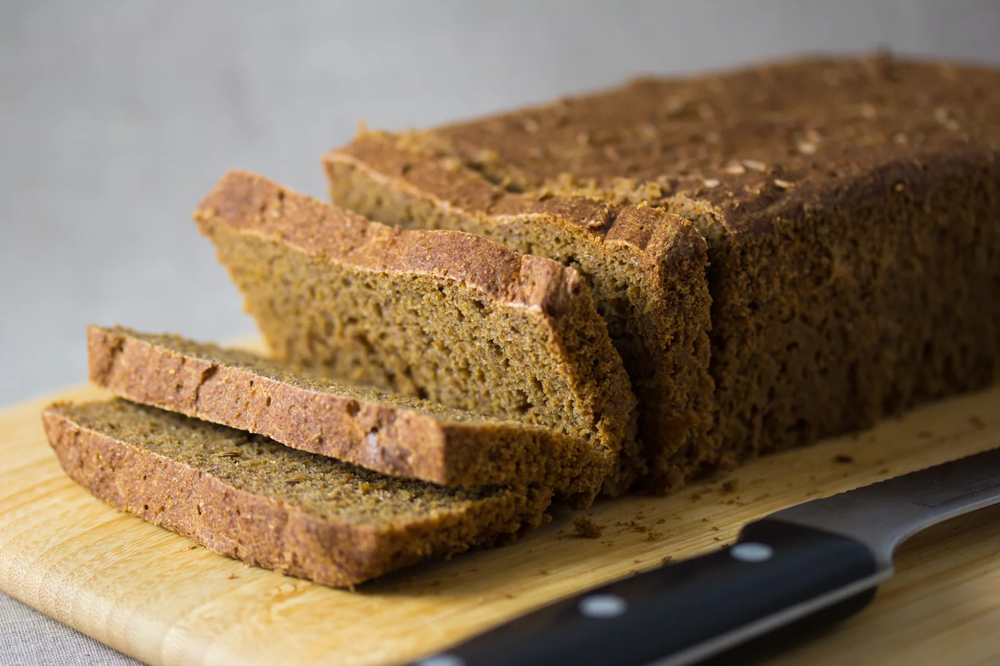

Kein Weizenteig
Roggenteig entwickelt kein vergleichbares elastisches Glutengerüst. Seine Struktur entsteht beim Backen auf andere Weise.

Herkunft & Geschichte
Roggen kommt mit kühlen Temperaturen und weniger fruchtbaren Böden vergleichsweise gut zurecht. Das machte ihn in Nord-, Mittel- und Osteuropa zu einem wichtigen Brotgetreide. In Deutschland prägte er über lange Zeit die tägliche Brotversorgung; seine Bedeutung reichte weit über einzelne regionale Spezialitäten hinaus.
Zum Roggenbrot gehört traditionell die Arbeit mit Sauerteig. Die Säuerung unterstützt die Backfähigkeit roggenreicher Teige und prägt ihr Aroma. Bis heute begegnet man Roggenbroten von Deutschland und Polen bis ins Baltikum und nach Skandinavien – mit unterschiedlichen Formen, Gewürzen und Backweisen.
Zum Weiterlesen: BZfE: Getreide-ABC Roggen ↗Zuletzt aufgerufen am
Von außen nach innen
Kräftiger Käse, würzige Aufstriche oder einfach gesalzene Butter passen zu seinem herzhaften Charakter.
Eine Scheibe Wissen
Roggenteig entwickelt kein vergleichbares elastisches Glutengerüst. Seine Struktur entsteht beim Backen auf andere Weise.
Sauerteig bringt Aroma und hilft, die Stärke in roggenreichen Broten beim Backen zu stabilisieren.
Roggenbrot und Roggenmischbrot sind unterschiedliche Bezeichnungen. Beim Mischbrot spielt auch Weizen eine größere Rolle.
Vom Lesen zum Backen
Ein Roggenbrot mit Vorteig und einer längeren Reifezeit. Das passende Rezept „Reines Roggenbrot mit Sauerteig“ findest du auf Chefkoch.
Rezept auf Chefkoch ansehen ↗Externe Rezeptseite · öffnet in einem neuen TabZuletzt aufgerufen am